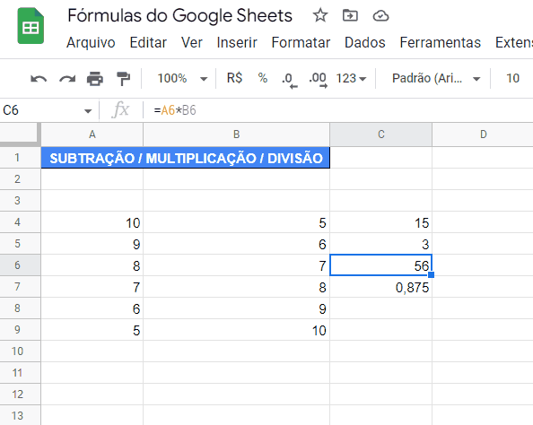

Introdução às Planilhas Eletrônicas
Planilhas são ferramentas poderosas para organização, análise e visualização de dados. Vamos explorar conceitos básicos e funções essenciais.
 Entendendo de forma básica as planilhas eletrônicasConceitos Fundamentais
Células
Unidade básica de uma planilha, identificada por letra (coluna) e número (linha). Ex: A1, B3
Fórmulas
Cálculos que começam com =. Ex: =A1+B1
Funções
Fórmulas pré-definidas. Ex: =SOMA(A1:A10)
Gráficos
Visualizações de dados criadas a partir de intervalos
Funções Essenciais
=SOMA(A1:A10) # Soma valores de A1 até A10
=MÉDIA(B2:B20) # Calcula a média dos valores
=SE(C1>50; "Aprovado"; "Reprovado") # Teste condicional
=PROCV(D1; E1:F100; 2; FALSO) # Busca vertical
=MÉDIA(B2:B20) # Calcula a média dos valores
=SE(C1>50; "Aprovado"; "Reprovado") # Teste condicional
=PROCV(D1; E1:F100; 2; FALSO) # Busca vertical
Principais categorias de funções:
- Matemáticas: SOMA, MÉDIA, MÁXIMO, MÍNIMO
- Lógicas: SE, E, OU
- Texto: CONCATENAR, DIREITA, ESQUERDA
- Data: HOJE, AGORA, DIA, MÊS
Laboratório de Planilhas
Experimente criar e editar planilhas diretamente no seu navegador:
Atividade: Controle de Notas
Crie uma planilha para calcular médias escolares:
- Na coluna A, insira nomes de 5 alunos
- Nas colunas B, C e D, insira notas de 3 provas (0-10)
- Na coluna E, calcule a média de cada aluno
- Na coluna F, use SE para mostrar "Aprovado" (média ≥6) ou "Reprovado"
- Crie um gráfico de barras com as médias
Formatos Condicionais
Aplicações úteis:
- Destacar notas abaixo da média em vermelho
- Colorir gastos acima do orçamento
- Mostrar barras de progresso dentro das células
- Encontrar valores duplicados
Gráficos e Visualização de Dados
- Barras: Comparar valores entre categorias
- Pizza: Mostrar proporções de um todo
- Linhas: Visualizar tendências ao longo do tempo
- Dispersão: Relacionar duas variáveis numéricas